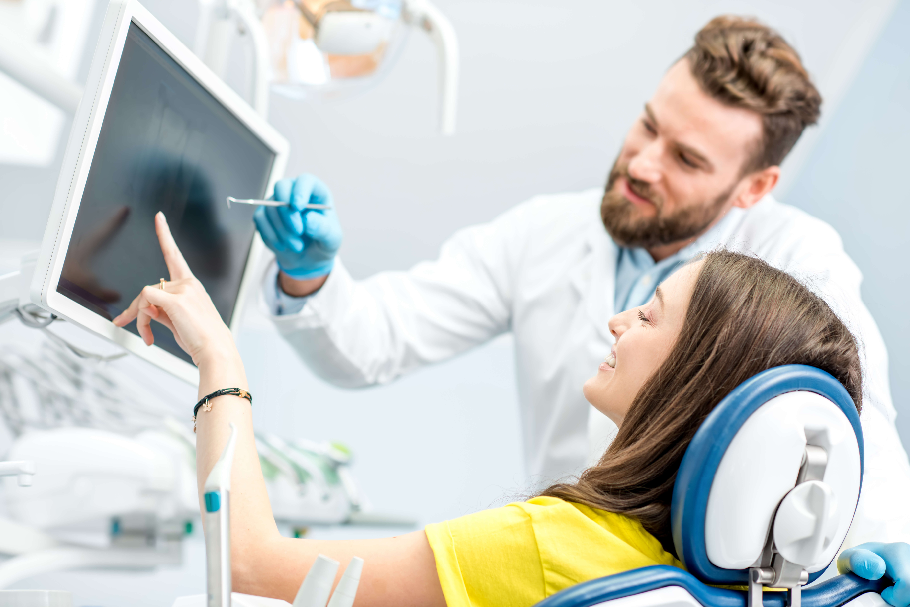

In this case study, we delve into the evolving landscape of dental professional education, focusing on four key aspects that highlight its significance and impact: educational insights, clinical decision-making, treatment planning, and the imperative of continued learning.
Educational Insights
Clinical Decision
Treatment Planning
Continued Learning
EDUCATIONAL INSIGHTS
Dental education has undergone a paradigm shift with the integration of cutting-edge technology and innovative teaching methods. The incorporation of virtual reality simulations, online learning platforms, and augmented reality tools has allowed students to gain hands-on experience in a controlled environment. This not only enhances their technical skills but also fosters critical thinking and problem-solving abilities, preparing them for the complexities of modern dentistry.
KEY CONSIDERATIONS
Incorporation of Technology
Dental education institutions are increasingly integrating technology into their curricula. Virtual reality simulations, computer-aided design (CAD) software, and digital radiography enhance students' learning experiences by providing realistic scenarios and immediate feedback.
Interdisciplinary Learning
Recognizing the interdisciplinary nature of dental care, educational programs encourage students to collaborate with other healthcare professionals. This exposes them to a broader spectrum of medical knowledge and fosters a more holistic approach to patient care.
Problem-Based Learning
Case studies and problem-solving exercises are pivotal in dental education. These methods engage students in active learning, challenging them to apply theoretical knowledge to practical situations, thereby enhancing critical thinking skills.
Evidence-Based Practice
Dental professionals are encouraged to base their decisions on the latest scientific evidence. Educational insights emphasize the critical evaluation of research and its application in clinical practice, ensuring that graduates stay current with evidence-based dentistry.
Ethical Considerations
Dental education underscores the importance of ethical practice. Students explore case studies that highlight ethical dilemmas and learn how to navigate complex situations while upholding professional integrity.
Clinical Decision-Making
The case-based approach to dental education has become paramount in nurturing students' clinical decision-making skills. By exposing learners to real-life patient scenarios and encouraging them to apply their knowledge to diagnose and recommend treatment plans, educators enable future dentists to develop a deep understanding of the intricate nuances of patient care. This approach ensures that graduates are well-equipped to make informed clinical decisions with confidence.
KEY CONSIDERATIONS
Case-Based Learning
Dental programs often use real patient case studies to teach clinical decision-making. This approach exposes students to a wide range of clinical scenarios, helping them develop the skills needed to diagnose and recommend appropriate treatments.
Risk Assessment:
Dental professionals learn to assess the risk factors associated with various dental conditions and treatment options. This helps in determining the most suitable treatment plan for each patient.
Diagnosis and Assessment:
Students are trained to conduct thorough patient assessments, including medical history reviews, oral examinations, and diagnostic imaging interpretation. These skills are crucial for accurate diagnosis.
Communication Skills
Effective communication is crucial for clinical decision-making. Dental education focuses on honing communication skills to ensure that patients understand their diagnoses and treatment options.
Adaptability
Graduates of dental programs are equipped with the skills to adapt to evolving patient needs and changes in the field of dentistry. They learn to adjust their clinical decisions based on emerging research and technology.
Treatment Planning
Effective treatment planning is a cornerstone of dental practice. Dental education institutions emphasize comprehensive treatment planning by instilling in students a holistic perspective that considers not only the immediate dental issues but also the patient's overall health and well-being. Case studies provide invaluable insights into formulating individualized treatment plans, promoting a patient-centered approach to care.

KEY CONSIDERATIONS
Comprehensive Assessment:
Dental education emphasizes the importance of a thorough patient assessment, including a review of the patient's medical history, clinical examination, and diagnostic imaging. This comprehensive assessment forms the foundation for effective treatment planning.
Patient-Centered Approach
Treatment planning revolves around the individual needs and preferences of each patient. Dental professionals are trained to consider not only the dental issues but also the patient's aesthetic concerns, expectations, and overall well-being.
Long-Term Outcomes
Dental professionals are trained to consider the long-term outcomes of treatments. This includes assessing the durability of restorations, potential for complications, and the need for follow-up care.
Alternative Treatment Options
Dental professionals are encouraged to explore and present alternative treatment options to patients. This allows patients to make informed choices based on their preferences and circumstances.
Documentation and Record-Keeping
Proper documentation of treatment plans is crucial for continuity of care. Dental programs teach students the importance of accurate record-keeping to track the progress of treatments and ensure legal compliance.
Continued Learning
Dentistry is a dynamic field with constant advancements in techniques, materials, and technology. Dental professionals must commit to lifelong learning to stay abreast of these developments. The case study approach encourages a culture of curiosity and continuous improvement among students. Graduates are prepared to embrace ongoing education, attend workshops, and engage in research to ensure they provide the highest standard of care throughout their careers.
KEY CONSIDERATIONS
Emerging Dental Materials
New dental materials, including biocompatible and esthetic options, constantly enter the market. Ongoing education allows dental professionals to evaluate and use these materials to improve patient outcomes.
Treatment Modalities
Continuous learning extends to new treatment modalities, such as minimally invasive dentistry and regenerative techniques. These approaches can enhance patient comfort and recovery, making them essential for modern practice.
Research and Publications
Engaging in dental research and publishing findings can contribute to the field's knowledge base. Continuous learning in research methodologies and scientific writing can support these endeavors.
Global Best Practices
Dental professionals may benefit from learning about best practices and innovations from other countries or regions, which can bring new perspectives and techniques to their practice.
Community Engagement
Staying involved in dental associations, volunteering for community dental health initiatives, and participating in dental conferences can provide valuable networking opportunities and exposure to new ideas.